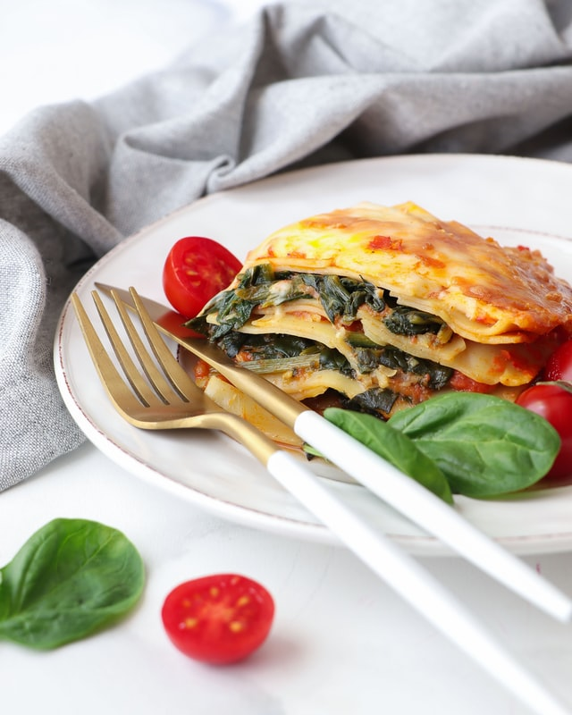

Lasagna

Description
A baked Italian dish consisting of wide strips of pasta cooked and layered with meat or vegetables, cheese, and tomato sauce.
Ingredients
- 1 pound sweet Italian sausage
- 3/4 pound lean ground beef
- 1/2 cup minced onion
- 2 cloves garlic, crushed
- 1 (28 ounce) can crushed tomatoes
- 2 (6 ounce) cans tomato paste
- 2 (6.5 ounce) cans canned tomato sauce
- 1/2 cup water
- 2 tablespoons white sugar
- 1 1/2 tables spoons dried basil leaves
- 1/2 teaspoon fennel seeds
- 1 teaspoon Italian seasoning
- 1 1/2 teaspoons salt, divided, or to taste
- 1/4 teaspoon ground black pepper
- 4 tablespoons chopped fresh parsley
- 12 lasagna noodles
- 16 ounces ricotta cheese
- 1 egg
- 3/4 pound mozzarella cheese, sliced
- 3/4 cup grated Parmesan cheese
Source
Image courtesy of Parnis Azimi, Unsplash